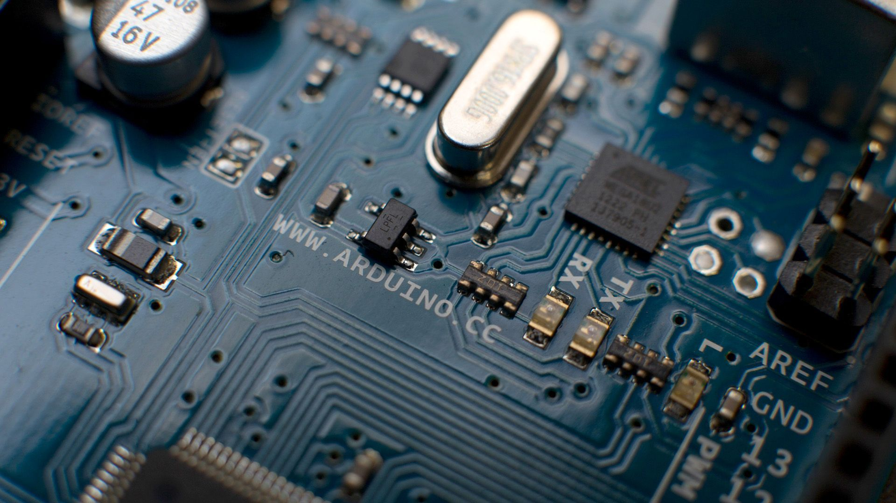

Construcción y programación del circuito con Arduino
1. ¿Qué es Arduino?
Arduino es una plataforma de hardware y software que permite desarrollar proyectos electrónicos interactivos. Se utiliza para controlar componentes físicos mediante instrucciones programadas, lo que permite construir desde circuitos sencillos hasta sistemas capaces de responder a diferentes entradas y acciones.
En este proyecto, Arduino se utiliza para controlar tres luces LED que representan las distintas fases de la Luna. La placa recibe instrucciones enviadas desde una aplicación móvil desarrollada con MIT App Inventor, mediante una conexión Bluetooth.
¡De esta manera, se combina programación, electrónica y comunicación inalámbrica para representar un proyecto compuesto mediante un modelo físico sencillo!
2. ¿Cómo funciona Arduino?
El funcionamiento de Arduino se puede comprender a partir de dos partes principales: la placa física, donde se conectan los componentes electrónicos, y el programa que contiene las instrucciones para controlar su comportamiento.
La placa Arduino UNO posee pines que permiten conectar componentes y controlar señales eléctricas. Cuando recibe las instrucciones correspondientes, puede activar o desactivar las salidas conectadas a los LED, según la lógica establecida en el programa.
Para programarla se utiliza el entorno de desarrollo Arduino IDE, que permite escribir el código, verificar que no contenga errores de compilación y cargarlo en la placa mediante una conexión USB. Una vez cargado, el programa se ejecuta en el microcontrolador de Arduino y controla el circuito de acuerdo con las instrucciones programadas.
En este caso, la programación debe permitir que Arduino interprete las instrucciones recibidas por Bluetooth y determine qué luces deben encenderse o apagarse para representar cada fase lunar.
3. Componentes utilizados
Para construir el circuito se utilizan distintos componentes electrónicos, cada uno con una función específica:
- Arduino UNO: es la placa principal del proyecto. Ejecuta el programa y controla el funcionamiento de los LED.
- Tres LED: se utilizan luces de color blanco, amarillo y violeta. Mediante distintas combinaciones de encendido y apagado, se busca representar las fases de la Luna.
- Tres resistencias de 220 ohmios: se conecta una resistencia en serie con cada LED para limitar la corriente eléctrica que circula por él y reducir el riesgo de dañarlo.
- Cables de conexión: permiten unir los pines de Arduino con los LED y las resistencias, completando el recorrido eléctrico del circuito.
- Módulo o dispositivo Bluetooth: permite la comunicación inalámbrica entre la aplicación móvil y Arduino.
Cada componente cumple una función importante. La placa procesa las instrucciones, los cables conducen las conexiones eléctricas, las resistencias protegen los LED y las luces permiten visualizar el resultado del control electrónico.
4. Programación y control de los LED
Además de realizar las conexiones físicas, es necesario programar Arduino para establecer cómo debe responder el circuito. El código define qué pines se utilizan para los LED (9, 10 y 11) y qué acciones se deben realizar cuando se recibe una instrucción.
En términos generales, el programa configura los pines como salidas y controla su estado mediante instrucciones que permiten encender o apagar cada luz. Para que esto funcione correctamente, las conexiones físicas deben coincidir con los pines indicados en el código.
La comunicación Bluetooth permite que las instrucciones lleguen desde la aplicación móvil. Según los datos que se reciban, Arduino debe identificar la acción solicitada y aplicar la combinación de luces correspondiente.
De esta manera, la programación relaciona las acciones realizadas en la aplicación con las respuestas físicas del circuito. La aplicación funciona como medio de control, mientras que Arduino ejecuta las instrucciones sobre los componentes electrónicos.
5. Conexión con la aplicación móvil
El circuito forma parte de un sistema que integra Arduino con una aplicación desarrollada mediante MIT App Inventor. La aplicación, instalada en un teléfono móvil compatible, cuenta con un botón destinado a gestionar la conexión Bluetooth y otros tres botones para controlar las luces LED.
Cuando se establece la comunicación, la aplicación puede enviar instrucciones a Arduino. La placa recibe esos datos a través del dispositivo Bluetooth utilizado y los procesa mediante el programa cargado en el microcontrolador.
Para que el sistema funcione, es necesario que la conexión esté correctamente establecida, que la aplicación envíe los datos esperados y que el código de Arduino interprete esos datos de la manera prevista.
Esta integración permite controlar un circuito electrónico desde una interfaz visual sencilla, sin tener que encender y apagar manualmente cada LED. La explicación detallada del diseño de la aplicación y sus botones se encuentra en la página dedicada a MIT App Inventor.
6. Representación de las fases de la Luna
El objetivo principal del circuito es representar de una forma sencilla las diferentes fases de la Luna. Para ello, los tres LED se encuentran ubicados dentro de una estructura redondeada con pequeños agujeros que imitan visualmente los cráteres de la superficie lunar.
Al encender luces individuales o realizar combinaciones entre ellas, se busca representar distintas apariencias de la Luna. Los colores blanco, amarillo y violeta permiten diferenciar visualmente las luces y reconocer las combinaciones seleccionadas.
La estructura física ayuda a que el circuito no sea solamente un conjunto de componentes electrónicos, sino también una maqueta relacionada con el tema del proyecto. De esta manera, la programación y el diseño del montaje trabajan juntos para representar visualmente el fenómeno astronómico.
Es importante aclarar que los LED constituyen una representación didáctica simplificada: las fases reales de la Luna se producen por los cambios en la porción iluminada que observamos desde la Tierra, no por cambios de color de la Luna.
Referencias visuales


7. ¿Qué aprendimos? Conclusión
La realización de este proyecto permitió poner en práctica conocimientos de programación y electrónica mediante la construcción de un circuito con Arduino UNO. Se trabajó con la conexión de componentes, el uso de cables y resistencias, y el control de luces LED a través de instrucciones programadas.
También se integró el circuito con una aplicación móvil creada en MIT App Inventor, utilizando Bluetooth como medio de comunicación. Esto permitió comprender cómo una aplicación puede enviar instrucciones a un dispositivo electrónico y cómo el programa cargado en Arduino las transforma en acciones físicas.
Además, el proyecto permitió relacionar los conocimientos técnicos con una propuesta visual vinculada a las fases lunares. La estructura redondeada con apariencia de cráteres y las diferentes combinaciones de luces ayudan a comunicar la idea de una manera simple y comprensible.
En conclusión, este trabajo demuestra la importancia de integrar hardware, software y diseño para desarrollar un proyecto funcional. También permitió aprender que el funcionamiento correcto depende tanto de las conexiones eléctricas como de la programación y de la comunicación entre los dispositivos!